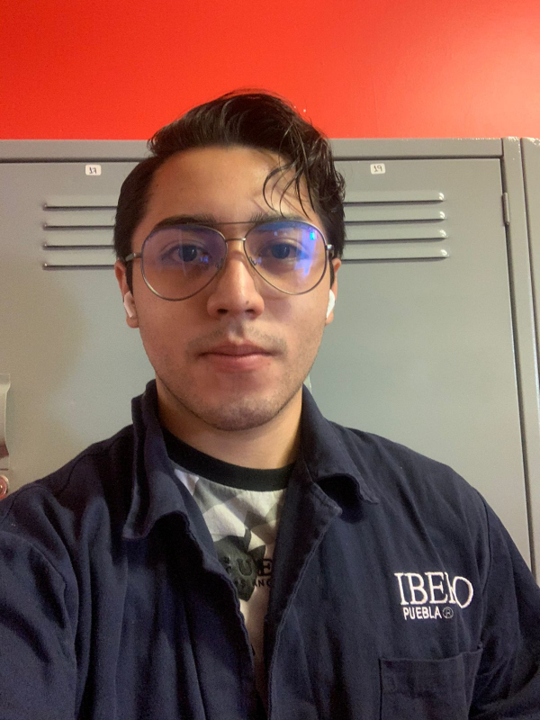

Portafolio de Actividades
Laboratorio de Redes Digitales
Departamento de Ciencias e Ingenierías | Universidad Iberoamericana Puebla, México.
Wifi ESP32 – Thingspeak

- Resumen -
Esta práctica permitió configurar la plataforma ThingSpeak para visualizar datos en la nube mediante el uso de sensores digitales (botón), analógicos (potenciómetro) e inteligentes (DHT22) conectados a módulos ESP32/ESP8266, los cuales se programaron en Arduino IDE y se probaron en simulaciones con Wokwi antes de su implementación física. Aunque no se logró observar la transmisión en tiempo real, se consiguió visualizar las gráficas de los datos recolectados, demostrando el potencial de ThingSpeak para aplicaciones IoT. Adicionalmente, se integró un sensor PIR para monitorear movimiento, reforzando conceptos clave como conectividad WiFi, procesamiento de datos en la nube y la importancia de validar circuitos mediante simulaciones antes del montaje físico en protoboard.
- Introducción -
Esta práctica demostró el uso de ThingSpeak como plataforma IoT para visualizar datos de sensores conectados a módulos ESP32/ESP8266, donde configuramos sensores digitales (como botones), analógicos (potenciómetros) e inteligentes (DHT22) para enviar información a la nube mediante WiFi. Aunque no se logró visualizar completamente el envío en tiempo real, se generaron gráficos en ThingSpeak que validaron el concepto de monitoreo remoto. El proceso incluyó simulaciones previas en Wokwi, programación en Arduino IDE y la creación de un tablero público para el sensor PIR, reforzando la importancia de estas herramientas en aplicaciones de automatización y análisis de datos en proyectos IoT.
- Materiales -
- NodeMCU ESP8266 o ESP32
LED
- Resistencia de 220 Ohms
- Botón
- Resistencia de 1 Kohm
- Potenciómetro
- Sensor DHT2
- Sensor PIR
- Desarrollo -
Esta práctica abarcó desde la configuración inicial del IDE de Arduino para programar el ESP32 hasta la implementación de proyectos IoT con ThingSpeak, pasando por ejercicios fundamentales de electrónica digital. Comenzamos instalando los controladores necesarios y explorando el pinout del ESP32, seguido de programas básicos para controlar LEDs (encendido/apagado, parpadeo con retardos y control mediante botones con condiciones lógicas OR/AND). Posteriormente, avanzamos hacia aplicaciones IoT: configuramos sensores digitales (botón, PIR), analógicos (potenciómetro) e inteligentes (DHT22), validando su funcionamiento tanto en simulaciones Wokwi como en hardware real. La práctica culminó con la integración a ThingSpeak, donde transmitimos datos de los sensores a la nube, implementando especialmente el monitoreo del PIR en un tablero público, lo que demostró el flujo completo desde la adquisición de datos físicos hasta su visualización remota, consolidando conceptos clave de programación embebida, manejo de sensores y aplicaciones IoT.
Simulación
A continuación se presentan los 14 códigos de los circuitos realizados, estos se utilizaron para poder simular el sistema.
1. Arduino as ISP

2. Attiny Blink

3. Attiny Digital HIGH

4. Attiny Digital LOW

5. Attiny Digital Delay
6. Attiny 2 LEDs Delay

7. Attiny 3 LEDs Delay

8. Attiny Digital Input
9. Attiny Digital Input IF-ELSE

10. Attiny Digital Input IF variables
11. Attiny Digital Input OR

12. Attiny Digital Input AND

13. Attiny Contador + 3 LEDs


14. Attiny Contador + - 3 LEDs

Diseño
Los diseños utilizados en esta práctica, proporcionados por el maestro Huber, incluyeron tres variantes: un circuito básico con solo un LED, otro con un botón de control y un tercero con dos botones que implementan lógicas OR y AND. Cada configuración conectó los componentes (LED y botones) a pines GPIO específicos del NodeMCU ESP32, siguiendo diagramas esquemáticos detallados que aseguraron conexiones estables y uso óptimo de los puertos. Para los circuitos con sensores, se planificaron cuidadosamente las conexiones -asignando pines digitales para botones y el LED, y verificando niveles de voltaje adecuados- mientras que la programación en Arduino IDE integró tanto el control local del LED como la comunicación con ThingSpeak, utilizando su API para el envío de datos desde sensores como el DHT22 y el PIR. Esta estructura permitió transitar de ejercicios básicos de electrónica digital hasta aplicaciones IoT funcionales.

Construcción
El montaje físico se realizó en una protoboard, donde se conectó el NodeMCU ESP32 a los diferentes componentes (LED, botones y sensores) utilizando cables dupont, siguiendo fielmente los diagramas esquemáticos proporcionados. Tras completar las conexiones, se cargaron los programas desarrollados en el IDE de Arduino al microcontrolador para verificar su funcionamiento. Posteriormente, se realizaron pruebas exhaustivas de cada módulo: primero validando el control básico del LED con los botones, luego comprobando la lectura correcta de los sensores, y finalmente confirmando la transmisión exitosa de datos a la plataforma ThingSpeak a través de la conexión WiFi. Todo el proceso fue meticulosamente documentado mediante fotografías del circuito armado, capturas de pantalla del código implementado y videos demostrativos del sistema en operación, lo que permitió verificar tanto el correcto ensamblado físico como el adecuado funcionamiento de la lógica programada.
- Resultados -
A continuación se muestran los videos de los circuitos físicos.
- Conclusiones -
Esta práctica nos permitió integrar exitosamente hardware y software utilizando el ESP32, desde el control básico de LEDs con botones hasta la transmisión de datos a la nube mediante ThingSpeak, donde validamos el funcionamiento de sensores digitales (botón, PIR), analógicos (potenciómetro) e inteligentes (DHT22) tanto en simulaciones Wokwi como en implementación física, demostrando cómo estos componentes interactúan con el microcontrolador y la plataforma IoT para crear sistemas de monitoreo remoto, adquiriendo así competencias fundamentales en programación embebida, manejo de GPIOs y transmisión WiFi que sientan las bases para desarrollar proyectos más complejos de automatización y IoT.
- Referencias -
Microchip AVR® microcontroller primer: programming and interfacing, third edition (synthesis lectures on digital circuits and systems), BARRETT, Steven F. Pack Daniel J., Editorial Morgan & Claypool, 2019.
K. He, X. Zhang, S. Ren and J. Sun, "Deep Residual Learning for Image Recognition," 2016 IEEE Conference on Computer Vision and Pattern Recognition (CVPR), Las Vegas, NV, USA, 2016, pp. 770-778, doi: 10.1109/CVPR.2016.90.
J. D. Hunter, "Matplotlib: A 2D Graphics Environment," in Computing in Science & Engineering, vol. 9, no. 3, pp. 90-95, May-June 2007, doi: 10.1109/MCSE.2007.55.
- Descargables -
Descargar documento PDF: documento.pdf
Descargar codigo Arduino: codigo.ino
Descargar Archivo 3d .STL: pieza.stl